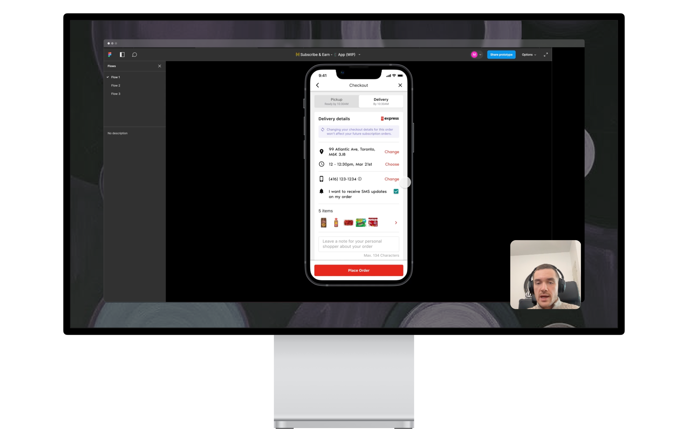
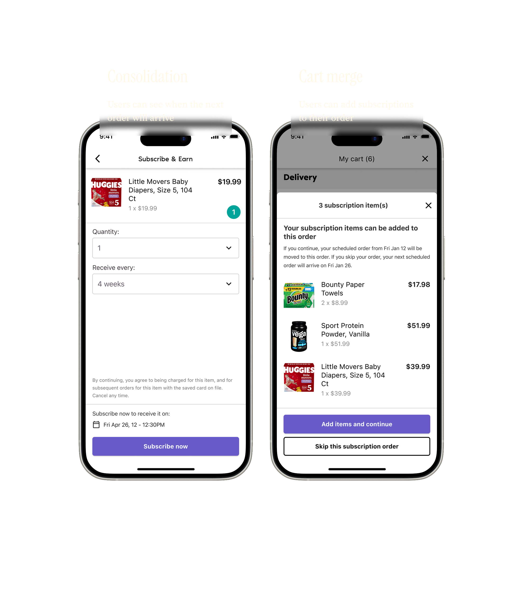
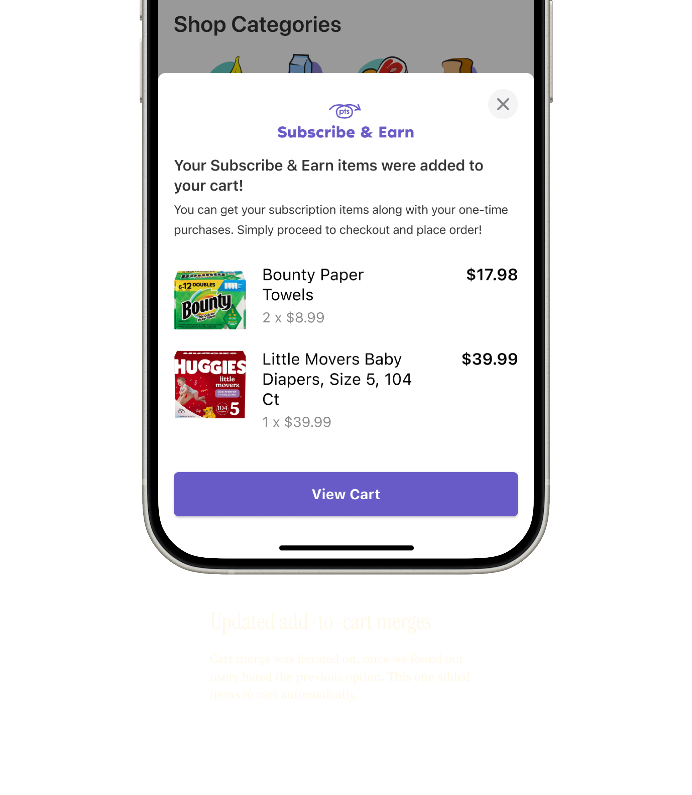
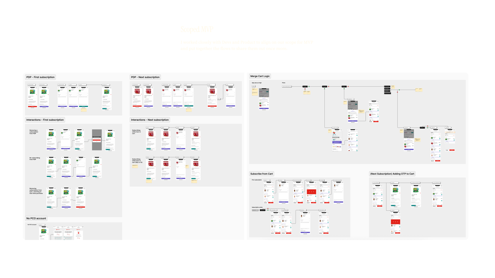

Creating a subscribe and earn program — from scratch

Subscribe & Earn explored whether loyalty points could incentivize recurring grocery purchases. Early results showed that customers consistently preferred immediate discounts over subscription-based rewards.
Context
PC Express is the grocery e-commerce platform for Loblaw, serving over 3 million active customers and generating nearly $2B in annual revenue. Alongside it sits PC Optimum, the largest loyalty program in Canada.
Subscribe & Earn started as a "Sharktank" idea—an internal pitch competition where teams propose new product concepts. The idea set out to connect these two powerful systems, rewarding customers with PC Optimum points when they committed to recurring purchases of frequently bought items—every week, two weeks, or month. The hypothesis was that subscriptions could increase retention and repeat purchase behavior by removing friction from habitual shopping.

Approach
I led the design for the program on the UI side, and worked closely with Operations teams to understand impacts to existing systems and design new processes. I kicked off this work by looking into competitor programs and designing flows for how this could work in PC Express.


Challenges
Based on existing business rules, our system only allowed one open order at a time to boost AOV, alongside a $35 minimum. If a user already placed an order to arrive for next week, and tried to place another one right now to arrive for tomorrow, those items would be added to the open order for next week.
This meant unless all subscriptions had the same set frequency, and they added up to over $35, the user wouldn't receive their items. In addition, we had a risk that a user could have a subscription overlap with a regular order.
I first designed a process to allow customers to merge their subscription order with their regular weekly shop if their subscription was coming up soon. I then designed for "consolidation" where once you set up your first subscription, all future subscriptions are automatically scheduled to arrive on the same day of the week.





Outcomes
Two months after launch, adoption was well below expectations. Roughly 600 customers had an active subscription compared to an expectation of 70,000 in the first year. About 1,100 subscriptions were active versus an expected 60,000 subscription orders annually.
While longer-term metrics like retention required more time to evaluate, early signals were clear. Customers understood the feature and could use it successfully, but consistently chose sale pricing over committing to subscriptions for future rewards.

Learnings
Subscribe & Earn reinforced that strong UX can't compensate for a weak value proposition. In grocery, immediate savings mattered more than deferred loyalty benefits, even when flexibility was built into the system.
In hindsight, deeper validation earlier—particularly around customer motivation and cost-to-serve—could have reduced risk. A smaller experiment, such as automatically adding frequently purchased items to cart without a subscription commitment, may have tested the underlying behavior before introducing fulfillment complexity.
Although outcomes fell short, the work clarified where subscriptions do and don't make sense in grocery e-commerce, and informed future roadmap decisions with a clearer understanding of customer tradeoffs.